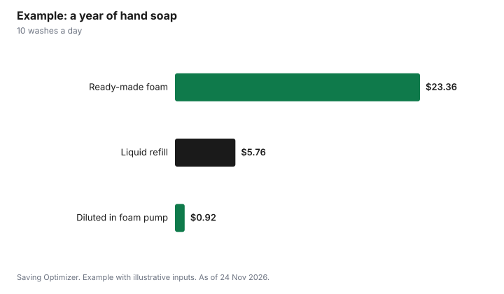

Personal Care · Canada
Hand Soap Refills and Foaming Dispensers: Cutting the Cost per Wash

Buying hand soap in big refills and using it in a foaming pump is the cheapest way to wash your hands. At Dollarama, a 1.9 L refill costs $3.00, or 16 cents per 100 ml, while ready-made foaming soap costs 80 cents per 100 ml. Topping up a foaming pump with diluted refill soap cuts this example household's year from $23.36 to under $1.
Key takeaways
- Dollarama 1.9 L refill: $3.00, or 16 cents per 100 ml (checked 24 Nov 2026).
- Ready-made foaming soap: $2.00 for 250 ml, or 80 cents per 100 ml.
- Foaming pumps mix soap with air, so diluted soap works.
- Example ratio: 1 part liquid soap to 4 parts water.
- Example household year: $23.36 ready-made foam vs $0.92 diluted refill.
Price per 100 ml
| Product | Price | Per 100 ml |
|---|---|---|
| Spasoap hand soap refill, 1.9 L | $3.00 | 16 cents |
| Spasoap hand soap, 473 ml | $1.75 | 37 cents |
| Foaming hand wash, 250 ml | $2.00 | 80 cents |
How to refill a foaming pump
- Rinse the empty foaming bottle.
- Add water first, then the soap, so it doesn't froth up.
- Example: 1 part liquid soap to 4 parts water.
- Swirl gently instead of shaking.
- Make small batches and rinse the bottle between fills.

A year of hand washing: an example
Example: 10 washes a day is 3,650 a year. Ready-made foaming soap at an example 0.8 ml a pump costs $23.36. Liquid refill at 1 ml a wash costs $5.76. Diluted refill in a foaming pump costs about $0.92.
See bar soap vs body wash and a toiletries price check.
Sources
- Dollarama, Spasoap hand soap refill 1.9 L, Spasoap 473 ml and foaming hand wash 250 ml, checked 24 Nov 2026.
Frequently asked questions
What's the cheapest way to buy hand soap?
Buy big refills and use them in a foaming pump with water added.
How much water do I add to foaming soap?
An example ratio is 1 part liquid soap to 4 parts water. Add the water first.
Does diluted foaming soap still clean?
Yes. Lathering and scrubbing for 20 seconds is what does the work.
How much is hand soap at Dollarama?
Dollarama listed a 1.9 L refill for $3.00 and 250 ml of foaming soap for $2.00 when checked on 24 Nov 2026.
Can I use any soap in a foaming pump?
Most thin liquid soaps work. Thick soaps may clog the pump.
Researched and drafted with AI assistance and fact-checked against official Canadian sources. How we create content.
Note: Prices change. Usage and dilution are examples. Education only.